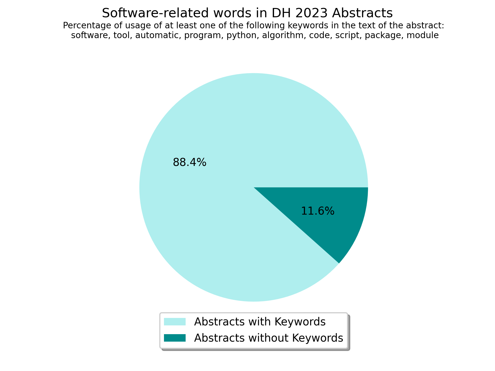

Software Citation in the Digital Humanities
Daniel Jettka (University of Paderborn), Ulrike Henny-Krahmer (University of Rostock), Anne Ferger (University of Paderborn), Fernanda Alvares Freire (University of Rostock)
DH2023
July 14, 2023
Slides at: https://hennyu.github.io/dh_23/

Overview
- Research Software
- Software Citation Principles
- Annotation Criteria
- Conclusions
1. Software in the Digital Humanities
Software plays a central role in Digital Humanities
|
Computational analysis of large data sets, computer-based simulations, and software technology in general play a central role for virtually all scientific breakthroughs of at least the 21st century. |
How relevant is software at DH 2023?
We understand research software as...
...software that is used for research questions, objects, data and methods, and thus for the research results.(Henny-Krahmer and Jettka 2022)
Why is it important to properly cite software?
- Guarantee transparency
- Enable reproducibility
- Give proper credit to developers
- Maintain stable reference (for example, to a particular version)
Our goal today is to...
- review the practice of software citation in the DH
- promote adequate identification, acknowledgement, and tracking of software as a scholarly tool and output
2. Software Citation Principles
Recommendations for software citation
|
"did the software play a critical part in my research?" or "did the software provide something novel?" |
Six principles for citing research software:
- Importance
- Credit and Attribution
- Unique Identification
- Persistence
- Accessibility
- Specificity
(Smith et al. 2016)
3. Annotation Criteria
Characteristics of our criteria
- In line with software citation principles
- Modelled as TEI Taxonomy
- Available on Github
Annotation criteria
| Label | Description |
| Bib.Soft | A Bibliographic entry for the software itself |
| Bib.Ref | A Bibliographic entry for a reference publication about the software, e.g. a journal article, book or user manual |
| Name.Only | Only the name of the software is mentioned |
| Agent | The developers or responsible persons are named |
| URL | The citation contains a URL that points to the software itself |
| PID | The citation contains a persistent identifier (PID) for the software itself |
| Ver | The citation includes an indication of a specific software version |
Some considerations
- We decided to include programming languages when directly connected to the technical development of the research
- Only concrete mentions to software were tagged
- We did not tag datasets
?. Conclusions
Conlusions ...
- ...
Thank you!
Slides at: https://hennyu.github.io/dh_23/
References
- Anzt, Hartwig / Bach, Felix / Druskat, Stephan / Löffler, Frank / Loewe, Axel / Renard, Bernhard Y. / Seemann, Gunnar / Struck, Alexander et al. (2021): “An environment for sustainable research 5 software in Germany and beyond: current state, open challenges, and call for action [version 2; peer review: 2 approved].” F1000Research 9:295. https://doi.org/10.12688/f1000research.23224.2.
- Druskat, Stephan (2021b): “Research software citation for developers.” Research Software Citation. Cite and Make Citable! (Version 1.1). https://cite.research-software.org/developers/ [last accessed: 04.11.2022].
- Henny-Krahmer, Ulrike / Jettka, Daniel (2022): “Softwarezitation als Technik der Wissenschaftskultur. Vom Umgang mit Forschungssoftware in den Digital Humanities.” In: DHd2022. Konferenzabstracts. https://doi.org/10.5281/zenodo.6328046.
- Jackson, Mike (n. d.): “How to cite and describe software.” In: Software and research: The Software Sustainability Institute’s Blog. https://www.software.ac.uk/how-cite-and-describe-software [last accessed: 04.11.2021].